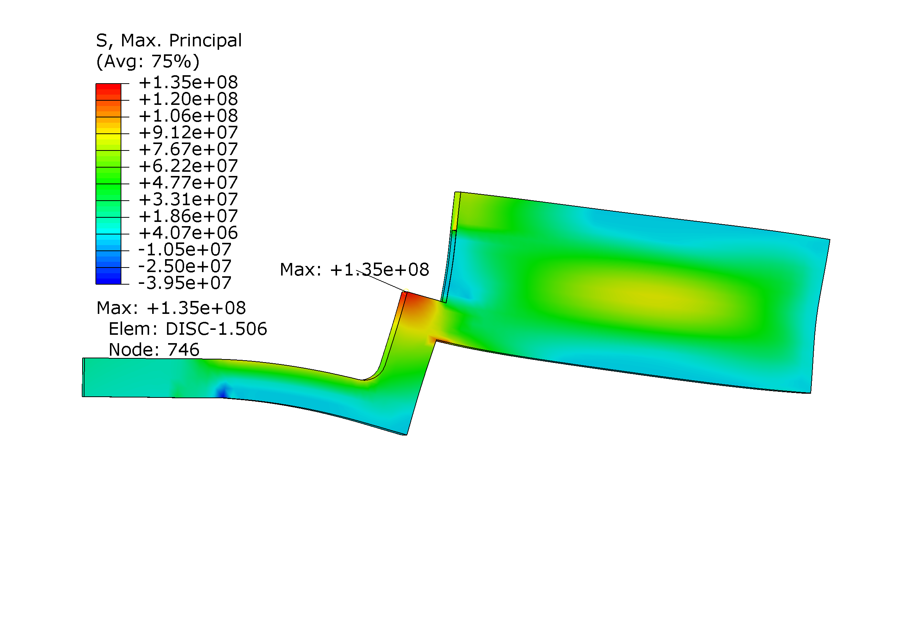
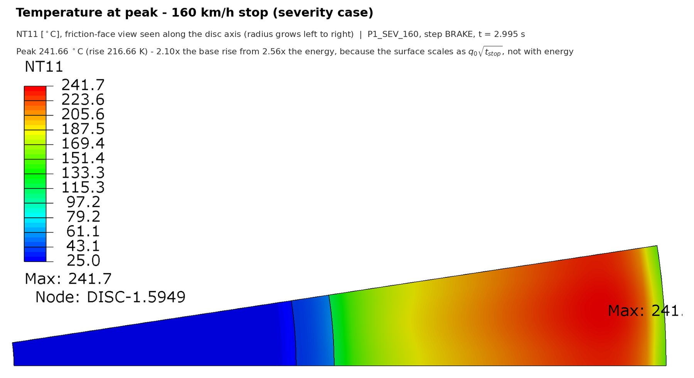
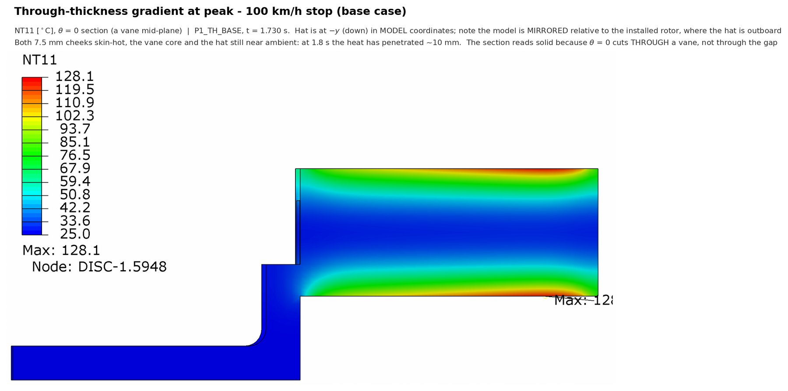
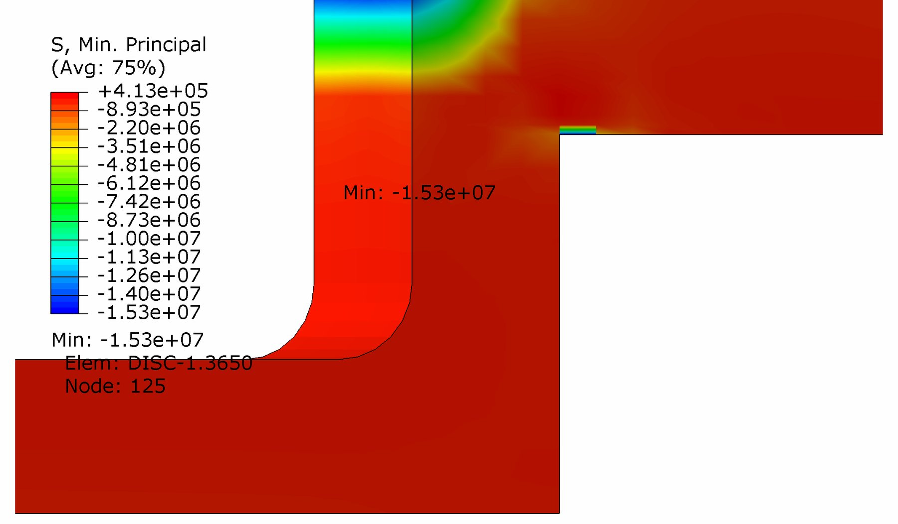
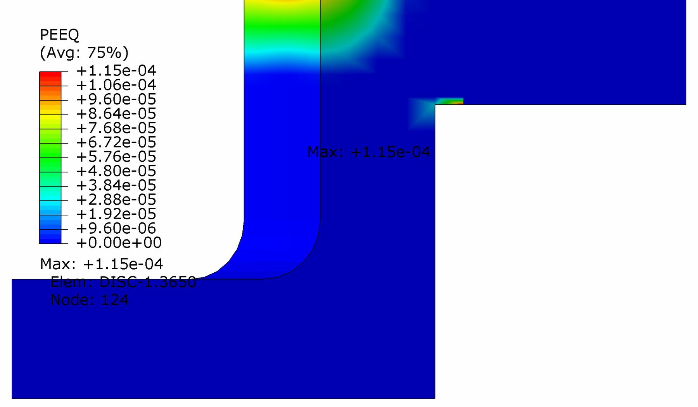
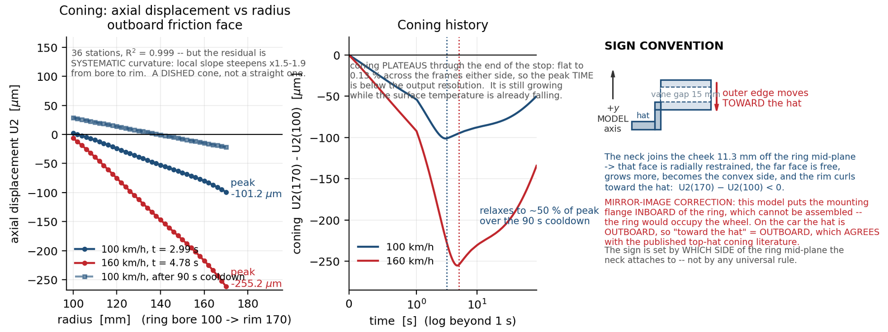
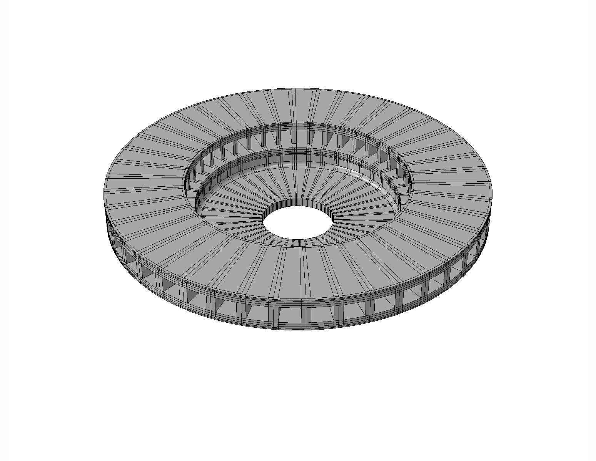
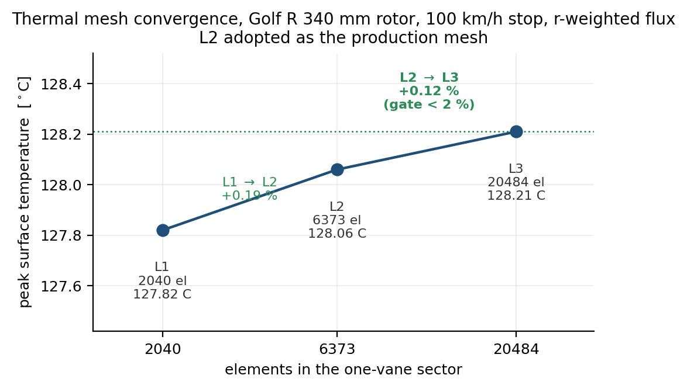
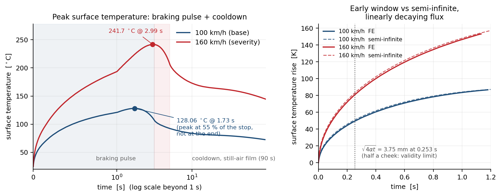
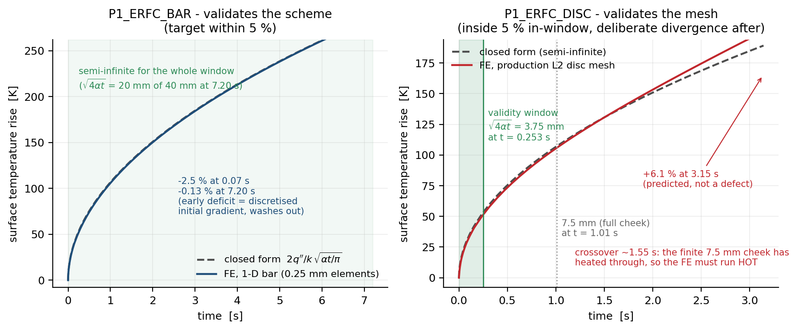

Ventilated Brake Disc: Transient Thermo-Mechanical Analysis
- Solver
- Abaqus/Standard, sequentially coupled
- Validated against
- erfc closed form, within 2.4%
- Headline
- 241.7°Cpeak surface, 160 km/h stop
- Material
- EN-GJL-250 grey cast iron

Problem
A brake disc converts a car's kinetic energy into heat at the friction face in a few seconds, and that heat has to go somewhere: it drives a transient temperature field that cones the disc out of flat and stresses the hat fillet, the corner where the friction ring meets the mounting hat, in ways that a purely thermal or purely structural model would each miss half of. This study builds a VW Golf R-class ventilated front rotor (340 by 30 mm, mass-calibrated to the 10.6 kg OEM target), runs the transient thermal problem for two braking severities, and maps the result onto a nonlinear structural model to find the fillet stress and the disc's coning, then tests how much of the answer is actually set by a boundary condition assumption rather than by the physics.
Method
The friction ring was meshed as a one-vane sector with exact periodic boundary conditions, r-weighted flux distribution across the swept annulus, and a mesh ladder from 2,040 to 20,484 elements. The thermal history was then mapped onto a nonlinear structural model (Rankine-capped cast iron plasticity) to get the hat-fillet stress and the coning shape, first under a simplifying full-underside clamp, then under a more realistic bolt-circle washer-band restraint matching how five bolts actually hold the disc to the hub.
Validation
An independent adversarial audit of the whole project found the arithmetic clean at every step it re-derived, but four of the input assumptions biased low: uniform flux instead of the physically correct r-weighted profile, a front braking-share fraction that did not match the source study's own stated range at this deceleration, a contact-fraction factor derived from a formula that assumes equal front/rear contact areas, and no rotor rotational inertia at all. Correcting all four raised the peak temperature from 100.3 to 128.1 °C at 100 km/h and from 185.8 to 241.7 °C at 160 km/h, which is disclosed plainly as a revision rather than folded in silently. The corrected thermal result also now sits inside Limpert's published 80 to 120 K single-stop temperature-rise band at 100 km/h, where the earlier, uncorrected model had sat just below it. Mesh convergence on the corrected load is tight (L2 to L3, +0.12 percent against a 2 percent gate) and the model is bracketed above a lumped-capacity floor and a semi-infinite analytical limit in the correct physical order at both severities.
Headline results
| Quantity | 100 km/h | 160 km/h |
|---|---|---|
| Peak surface temperature | 128.1 °C | 241.7 °C |
| Mesh convergence, L2L3 | +0.19% | +0.12% |
| Hat-fillet stress, full clamp (stiff bound) | - | 372.8 MPa |
| Hat-fillet stress, bolt-circle band (production BC) | - | 151.0 MPa |
| Effect of the boundary condition alone | −59.5% | |
The single largest effect in the whole project is not mesh density, fillet radius, or the material model: it is which boundary condition represents the real bolted joint. Changing one `*Boundary` card from a full-underside clamp to a bolt-circle washer band drops the hat-fillet stress by 59.5 percent, on the identical mesh, load and material, while the far-field temperature control moves only 2.6 percent. A nonlinear closure run confirms the corner survives plastically at both severities without the material model's own tensile cap (250 MPa) making that conclusion circular, and the residual stress left after unload is compressive and protective on the second stop, more so under the stiffer bound.
In motion






Figures



Limitations
- An earlier claim that a single 160 km/h stop arithmetically could not reach the 200 to 400 °C literature band is weakened by the audit correction: 241.7 °C now sits at the bottom of that band, so only repeat stops or a sustained descent reach the top of it.
- The cast-iron plasticity card yields in tension at a hardening cap of 250 MPa with no fracture criterion, so a nonlinear result reading below that cap is partly guaranteed by the card, not purely discovered by the solve; the margin is reported primarily as plastic strain against ductility for this reason.
- The coning-direction mechanism has been reproduced across two geometries built by the same pipeline, which is model repeatability, not independent validation against a measurement.
- No specific braking system supplier or pad material is claimed; the geometry is a named OEM reference part, EN-GJL-250 cast iron, single-stop loading only.